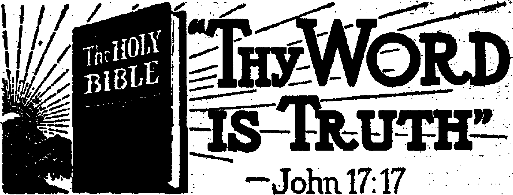

Contents
May It Please Hie Court
Manton Bribers Get the Works
Judges Get Some Strange Cases Jehovah’s witnesses in Canada
Venezuela .....
The Orinoco River
The Magnificent Scenery
Forest and Other Crops
The Days of Dictatorships
Imprisonment of Students A Knight of Saint Gregory Better Conditions Now Education and Transportation Caracas, La Guaira, and Maracay “Thy Word Is Truth’1
Why Human Plans Fail
How Our Big Catholic Family Got the Truth The Pope and the Bible Totalitarian Cruelty and Falsehood The Chicken Neck Administrator
Essay in a Wellington (Kans.) High School Nep os, the Chiliastic Bishop
Presenting “This Gospel of the Kingdom”
Growth of the Canon of the Hebrew and
Greek Scriptures (Part Three)
Papyrus Manuscripts
Codex Manuscripts
“Canons of Eusebius”
3
3
4
5
7
7
8
9
10
11
11
12
13
13
17
19
20
21
22
23
24
26.
26
27
30
Published every other Wednesday by WATCHTOWER BIBLE AND TRACT SOCIETY, INC. 117 Adams St., Brooklyn 1, N. Y„ U. S. A.
President Secretary Editor
$1 a
91.25 to
OFFICERS
N. H. Knorr
W. E. Van Amburgh Clayton J. Woodworth
Five Cents a Copy year in the United States «
Canada and all other countries
NOTICE TO SUBSCRIBERS
Remittances: For your own safety, remit by postal‘or express money order. When coin or currency is lost in the ordinary mails, there is no redress. Remittances from countries other than those named below may be made to the Brooklyn office, but only by International postal money order.
Receipt of a new or renewal subscription will be acknowledged only when requested. Notice of Expiration is sent with the journal one month before subscription expires. Please renew promptly to avoid loss of copies. Send change of address direct to us rather than to the post office. Your request should reach us at least two weeks before the date of issue with which it is to take effect. Send your old as well as the new address. Copies will not be forwarded by the post office to your new address unless - extra postage is provided by you.
Published also in Greek, Portuguese, Spanish, and Ukrainian.
OFFICES FOR OTHER COUNTRIES
England 34 Craven Terrace, London, W. 2
Australia 7 Beresford Road, Strathfield, N. S. W. South Africa 623 Bdston House, Cape Town
Mexico Calzada de Melchor Ocampo 71, Mexico, D. F. Brazil Caixa Postal 1319, Rio de Janeiro
Argentina Calle Honduras 5646-48, Buenos Aires
Entered as second-class matter at Brooklyn, N. Y.,
under the Act of March 3, 1879
. In Brief
What Aboiit Saccharin?
♦ A subscriber wants to know what about saccharin, saying that it is “very much in our homes as a substitute for siwjar and is advised by leaders in home economic schools, and we would like to know the truth about it”, d ■
Saccharin is made of toluene, and toluene is made of coal tar. The professor of chemistry at Lehigh University, V. S. Babasinian, probably knows as much about it as anybody. He writes:
Saccharin is used as a substitute for cane sugar in the treatment of diabetes, dyspepsia, obesity and in gastro-intestinal infections. According to Some authorities the compound is rapidly absorbed and eliminated practically unchanged through the kidneys without producing digestive troubles or toxic effects. On account of its antiseptic properties saccharin has not found universal favor as an artificial sweetener in foods, confectionery and bever- ■ ages. Saceharinated cake and pastry have been condemned as indigestible foods, and government regulations require that in liquors, syrups and the like the presence and amount of saccharin be plainly declared upon the label.
It may be added that saccharin, 550 times as sweet as cane sugar, was discovered in 1879. It is manufactured in a variety of forms, some running as high as 700 times as sweet as sugar, with others down to 300 times as sweet. Importation is prohibited in certain countries, on the ground that “Saccharin decreases appetite, gastric secretion, peptic digestion and intestinal absorption”.
Bringing the Scriptures into it, it does not appear that the Lord promised to bring His typical people into a land flowing with milk and saccharin; but, for that matter, He did not mention it as *a land flowing with milk and cane sugar; and some think that white sugar is almost as bad for humankind as saccharin.
“And in His name shall the nations hope.”—Matthew 12:21, A.R.V.
---------— - ■ - . . — • ---. 1— 1 1 I I I* ■ 1 1 IH ■■■■■■■ I " < ■ --------■ ' * ' — — I , .1 R <!■■» I ■------- ■■ ■ *
VVolume XXV Brooklyn, N. Y., Wednesday, August 2, 1944 Number 649
May It Please the Court
his position so long that of the 55 judges of the circuit courts of appeals, 38 are of his nomination; of the 185 district
k-I'y
JEHOVAH’S witnesses are interested in the United States Supreme Court; ; they are believed to have had more cases, ? and more important cases, before it than any other group in the past eighty years. : Not since the days of George Washing-> ton has any president named so many ; jnembers of the court as has President Franklin D. Roosevelt. In view of the fact that he designated Justice Stone as the chief justice, he may be said to have appointed eight of the nine members now on the bench. Justice Roberts is the only one without a Roosevelt commission. The elevation of Justice Stone was r wise and just. When Justice Byrnes made his unfortunate error of adjudicating that the preaching of the gospel by use of the printed page may be licensed and taxed, it was Justice Stone’s epoch-making privilege to side with the libertyloving minority when he asserted that if such taxes were to be sustained a way has been found for the effective suppression of speech and press and religion, despite constitutional guarantees. The very taxes now before us are better adapted to that end than were the stamp taxes which so successfully curtailed the dissemination of ■
ideas by eighteenth century newspapers and pamphleteers, and which were a moving cause of the American Revolution.
When Justice Byrnes was transferred from the Supreme Court to another job, Jehovah’s witnesses felt well able to endure the sorrow of parting. President Roosevelt may have concluded that he could serve his country better than in a judicial position. ,
President Roosevelt has now been in court judges, he nominated 102; of the 26 territorial court judges, he nominated 25; and of the 19 special federal judges he nominated 11. Negroes have urged that a learned and capable Negro be given a place on the Supreme Court bench, so that the 13,000,000 Negroes in the United States might have the proud satisfaction of knowing that one of their own kin would have a hand in deciding their affairs. People west of the Mississippi would like to have at least one of the justices from that region. Both of these requests seem reasonable.
Manton Bribers Get the Works
'Vengeance is mine; I will repay, saith the Lord”; and though full justice is not always accorded in advance, yet sometimes a good measure of i,t trickles through, and with a good degree of satisfaction to, lovers of righteousness. Thus, the Hall Brothers of Wallingford, Connecticut, paid $69,000 to Martin T. Manton, the Knight of Saint Gregory the Great, who went to Lewisburg (Pa.) Penitentiary for two years for peddling justice to whoever wanted to buy it. At length one of them got 18 months’ imprisonment and a .fine of $20,000, while the other got twice as much time in the pen and twice as big a fine. Whether the Hall Brothers are Catholics or had been disgraced by being made papal knights is unknown, but they deserved what they did get, anyway. Maybe the degree will come along later.
They should not be shut out of the great brotherhood of Catholic gangsters which includes Al Capone, Dutch Schultz, Hitler, Mussolini, Franco, Salazar, and Manton.
The whole seven of them should move over in the bed and make room for a
new brother of the same faith, Roberto commits property waste and fails to
Lanas Vallecilla. This gentleman, on Uncle Sam’s pay roll (same as Manton), was sending letters to Lisbon, written in secret ink, giving vital information about American war production. Then in ordinary ink he wrote harmless messages. Uncle Sam’s FBI boys read both kinds of writing; so they grabbed him just when he was trying to hire a New York model, at $450 a month, to do his secret writing for him. Nice way to keep out of prison, that, but it didn’t work, and they came for him in the big black wagon.
There is a good deal of satisfaction in recording that four loan sharks that constituted the defunct Madison Personal Loan Company of New York were sentenced to up to five years up the river for swindling the poor out of $500,000 to $700,000. Three of the four blubbered and squalled, and one man’s wife fainted when they got part of what is coming to them. They kept a double set of books.
The government closed up the mails to the Spectro-Chrome Institute, which institute, so the government claimed, offered to sell for $90 to $180 a lightmachine that would cure cancer, and leprosy, and make paralytics walk, etc. According to the government the machine was simply an ordinary 1,000-watt light bulb enclosed in a metal box. Over an aperture in the box could be superimposed a colored pane of glass. One could get cured, of whatever was the matter with him by getting the right color of glass over the hole. Meantime he would get stung for $90 to $180, anyway.
Judges Get Some Strange Cases
Judges get some strange cases. In
f
Britain, according to information, a man already married can bring another woman into his own home, where his lawful wife resides, and she can do nothing about it. In Kentucky a wife may be divorced for drunkenness, but not her husband for the same offense unless he * support his family. Oklahoma bars women from all high public offices. In New Jersey a wife’s wages become her husband’s property. In California, Florida and Nevada a wife may not engage in any business separate and apart from her husband without his consent or that of the court. In New York personal property belonging to the husband and wife pooled together with intent to createright of survivorship is tax-free when the husband survives the wife, but is taxable if the wife survives the husband.
In Chicago, on December 24, 1943, a judge issued a court order maintaining a mother’s right to lie to her little ones about Santa Claus, and restraining the father from pulling the whiskers off that fraud if, as and when he should show up the next day. Many honest children have been turned into liars and crooks by their own parents, and here was a judge helping the work along. The department of justice is getting some results in its suits against was frauds. Az report showed that in fourteen months it had recovered $25,000,000, having indicted about 200 persons and 35 companies in that time.
A good court is a good thing. It is an interesting thing to attend a trial in a good court and watch brilliant minds presenting various aspects of a complicated case, with interjections now1 and then by the judge on the bench. It is really very instructive. The time of all times will be when Christ Jesus, acting as the Father’s representative, brings into the light every secret thing, whether it be good or whether it be evil, and renders judgment accordingly. And that time, most remarkably, is the very day
in which we live. The Word of God is the instrument of judgment. It has already begun its judging work at the house of God, and it will progress until there is no place in all the earth where its voice is not heard. The King is on the bench. He is here, and all are being judged as to whether they desire to do, and will make an effort to do, what they know to be His will. The vindication of His name approaches, with Armageddon coming up over the hill to deal with all the rebels and malcontents, and put the predetermined sentences into effect.
Jehovah’s witnesses in Canada
HALLS were engaged for the Memorial in .1943. One meeting was interrupted in the city of Montreal, Quebec Province. Eleven members of the Royal Canadian Mounted Police rudely broke up this solemn meeting. The emblems were in full view of the intruders. The brother conducting the meeting explained their purpose for gathering, and kindly requested of these officers that they make their investigations at the close of the service. This request was refused. By this entirely unwarranted and unnecessary action on the part of a body of men who wear the uniform of an organization whose fame has spread throughout the world for enforcing the law justly, these men disgraced their uniform by intimidating a hall full of inoffensive Christian people Whose only object in coming together was to partake of the emblems of bread and wdne in commemoration of the Lord’s supper.
More than seven thousand brethren have regularly proclaimed the good news of the Theocratic New World Government. Effort has been made to ascertain the results of the work performed by these publishers. These New World publishers are joyful and esteem theii1 privilege the most important business of their lives, counting it an honor to serve. Tn eleven months considerably more than three-quarters of a million hours have been redeemed for field service. To locate the “other sheep", and behold them feeding at the Lord’s table, is a joy indescribable. Those whose hearts are in this work are not content with just making first calls, but desire to return to the home and render further aid. Their hearts burn with desire to preach the good tidings of the Kingdom. So back-calls are made until the teachable children of the Lord obtain freedom, find their own feet, and walk the pathway leading to salvation. What blessed and joyful work! The back-calls to the homes must be in the neighborhood of 250,000. Studies in the Bible are commenced so the interested will learn of the New' World and how to become children of the Most High. Many thousands of such interested persons are known to be attending these studies. A marvelous accomplishment under the circumstances.
Many publishers have left all to become full-time publishers. There are in the neighborhood of 500 such ministers devoting everything they have so that they might be found faithful to the Lord. The number has doubled in eleven months. Loyal, generous brethren have gladly offered assistance to these publishers in the way of food and lodging. Also through the ministration of elder brethren it has been possible for a monthly allowance to be made to some of the brethren, so providing for their necessities. Brethren who are devoting all their time to the service are spending between 150 and 200 hours each month in actual field service. The experiences of these brethren rejoice the hearts of all with whom they come in contact, as they relate the pleasures of service and the care and bountiful blessings of the Lord.
It is known that 250 have participated monthly in this ministry, making more
than a quarter of a million back-calls, conducting 14,000 studies, with an attendance of about 30,000. In addition to proclaiming the gospel to the “strangers” many have also ministered to those inside the fold, obeying the exhortation of the apostle Paul: “If thou put the brethren in remembrance of these things, thou shalt be a good minister of Jesus Christ, nourished up in the words of faith and of good doctrine, whereunto thou hast attained.” (1 Tim. 4:6) Such faithful brethren do not have authority from some bishop of “Christendom”, testifying that they are ministers, neither do they teach the traditions of men, but rather “put the brethren in remembrance” of “good doctrine”. Therefore they are “good ministers”, though not believed such by courts and officials in the land.
Certain mature brethren have visited the companies of the Lord's people to advise them concerning the commandments of the Lord, and how to carry the same into effect according to iTis Theocratic arrangements. A visit is made twice a year to each pjace, and much appreciation is expressed. These servants are well versed in the knowledge of God’s Word, and therefore are equipped to show by example and counsel how His work should be done.
The year 1943 has been a year of grand beginnings, and among the greatest was the knowledge of the Bible College of Gilead. This bespeaks of great things to come. No matter how dark the conditions in the world are, no matter what we may have thought concerning the closing down of service, the opening of this college speaks volumes. The Lord is indicating there is much work yet to be done, and the brethren in Canada wish to be in it to the limit. Though it is not possible for brethren here to attend the college at the present time, yet they hope to take advantage of the provisions in the future. In the meantime we are granted the information concerning the course in Theocratic ministry. Many. companies of the Lord’s people are taking this up, and the brethren are enrolling with eagerness. It is amazing to note the quick development of those who commence this course, taking the lessons to heart with gratitude to the Lord. This is a wonderful arrangement. We know that “men have not heard, nor perceived by the ear, neither hath the eye seen, O God, beside thee, what he hath prepared for him that waiteth for him”. (Isaiah 64: 4) Though darkness covers the earth and gross darkness the people, yet His servants arise and shine, for light is come.
Bibles are used by the brethren as they minister from house to house. Their
t
testimony is woven around the Scriptures so that it will be very easy to turn to the Bible, enabling the hearer to receive instruction from the Word of God. This usage of the Bible has brought us much delight. Many have said, “This is. the most marvelous work I have ever engaged in.” There has been some difficulty in purchasing Bibles, due to the fact that the publishing houses do not have large stocks. However, some have been able to procure quantities of the Bibles specially required, and the brethren . have been supplied. All are now equipped with a most remarkable Bible, viz., the Authorized Version containing vital information, which is just the instrument needed for house-to-house service. Jt becomes a real “sword of the spirit”, and the publishers are learning how to use it correctly. The highest praise is voiced for this gift.—1944 Yearbook of Jehovah’s witnesses.
Bringing Shoes to Boot
♦ The footwear administrator of the Wartime Prices and Trade Board of Canada will hereafter permit women to have shoes in seven colors; babies’ shoes come in four colors. Rivets are permitted only on loggers’, miners’ and safety boots. Metal hooks, buckles and trimmings are prohibited. Men’s shoes may have a 1-inch overlap of sole.
Venezuela
THE Estados Unidos de Venezuela (United States of Little Venice) is a name that sounds very well in Spanish, and it is historically correct, but, with extreme measurements from east to west of 928 miles, and from north to south of 790 miles, the use of the English word 'littie” in describing such a great country seems inept. With an area of 352,170 square miles, Venezuela is considerably larger than the three great states, California, Oregon and Washington, that go to make up the Pacific Coast states of the United States of America.
And it comes as a surprise to the student to learn that though the name ‘Venice” does fit thousands of square miles of Venezuela, yet most of the 4,000,000 inhabitants of the country live in the Andes mountains, or extensions thereof in the form of plateaus ; that there are at least 25 perpetually snow-capped peaks rising over 15,000 feet above sea level, and that one of the passes through the Andean region is 14,300 feet above the ocean's bosom. The three highest peaks in Venezuela are La Columna (16,410 feet), Monte Humboldt (16,212 feet), and La Concha (16,146 feet). These are all located in the northwestern part of the country, and they are noteworthy as being considerably higher than any peaks to be found, in the United States.
The Orinoco River
In the year 1498 Christopher Columbus sailed along the shore of the north coast of South America, and, if memory serves correctly, passed the 165-mile-wide delta of the Orinoco river. One of the seamen remarked that the ship was massing a large island. Columbus, with jeener powers of observation, said, "The waters of that mighty stream drain the area of a continent.” He had it about right, for though all of the river’s 1,500 miles of length are in what is now called
Venezuela, yet it is the third-largest river system of South America. It has 436 tributaries. Where the Apure river enters the main channel, some 600 miles upstream, the river is two miles wide in the dry season and often seven miles wide in time of floods. So uniform is the general elevation of the immense plains (llanos) on the north shore of the Orinoco (375 to 400 feet above sea level) that in the rainy season hundreds of square miles are submerged and the country is covered with connecting channels.
In colonial times, despite the drawbacks of tropical heat, insect pests, and alternate floods and droughts, the llanos supported millions of cattle and horses. In the wars these were appropriated by whichever side chanced to be nearest, and the brave and capable llaneros (cowboys) along with them, so that now, there having been no substantial recovery, the vast llanos are virtually empty of bovine and human life.
The Orinoco rises in the Guiana highlands, away off in the south-southeast part of the country. After running along as a mountain stream for 150 miles, it divides, and by a natural canal 180 miles long, called the Casiquiare, it sends a part of its waters into the Rio Negro and hence into the Amazon. Farther down stream, for a distance of 200 or more miles, the river constitutes the boundary along a north-and-south line with Colombia, the next-door neighbor.
The Orinoco and its tributaries provide 6,500 miles of navigable waterways. On one of these tributaries, the Rio Meta, in the rainy season, it is possible to navigate to within 60 miles of Bogota, Colombia. At that season, in certain places in the Orinoco valley, the country under water sometimes measures a hundred miles across, and yet, at Ciudad Bolivar, 370 miles from its mouth, it sometimes narrow^ to 800 feet. Of its fifty mouths that reach the ocean along
165 miles of coast line, only seven are navigable.
There now follow, gathered from several sources, descriptions of the magnificent scenery one may observe from the deck of an Orinoco river steamer, attention being first drawn to the fact that the year is divided into two seasons, the dry and the wet, the latter occurring from April to October, when the temperature is also the highest. In the dry season the pasturage dries, and, as there are no barns, and no wells, most animals go into a torpor until it starts to rain again, ■fc
*
The Magnificent Scenery
The magnificence of the scenery on the banks of the Orinoco is beyond description. Forests of great extent are filled with aromatic trees; birds of beautiful plumage are common, and hordes of monkeys disport them-selves among the branches. Beyond these forests enormous plains extend their verdant surfaces farther than the eye can re$ch.
Upon these solitudes wander great herds of cattle, troops of half-wild horses, and innumerable bands of deer. Water courses known as canos intersect them, their water far more dangerous than the land, the haunts of alligators, fierce and gigantic, of electric eels whose shock numbs your swimming horse, causing him to sink.
The shallows are infested by a kind of great stinging ray that has a spike upon hts back. Let the strongest herdsman, broken to hardships from his youth, tread upon it, and he will weep like a child and call upon his friends to shoot him and end his misery. The wound may last two or three months before it heals.
Yet the water holds a foe deadlier to men and animals than any of the foregoing pests, the dread caribe, the deadly little fish which,
it
blood, collect in shoals, and in an incredibly short time almost devour the victim.
Jaguars haunt the beds of reeds upon the margin of the streams. With one blow of their paw they kill a horse; irT a few minutes lay a bullock dead upon the ground and drag his carcass two or three hundred yards toward their lairs.
On the tall hardwood trees upon the river banks, millions of egrets, homing at sunset, cluster like masses of new fallen snow. Herons and ibises, flamingoes, cranes, and every kind of stilt-legged bird fish in the shallows of the streams, while huge black waterfowl in regiments, platoons, and squadrons (for they all appear to fly as if drilled) sometimes pass for half. an hour continuously, like figures in a cinematograph, and as noiselessly. Parrots infest the woods, screaming and chattering, and round the plant life soar flights of macaws, like party-colored hawks.
Green snakes hang from the trees, find boas lurk in the recesses of the swamps. At nighttime vampire bats float as imperceptibly as thistledown through the still air, seeking some animal on which to alight and gorge themselves with blood.
The twittering of every kind of insect always fills the air during the daytime, but toward evening the terrifying concert of the mosquitoes overpowers all the smaller of the performers—shrill, not unmusical, but sleepbanishing.
Upon the ocean (for it is more like an ocean in certain states of atmosphere, or when the wind sets the tall grass stirring like waves,. than a mere’ plain) the mirage mocks during the heated hours of noon.
But if the aspect of the plains is menacing and hostile to mankind (for you divine that malaria lurks in every pool) it is blotted out by sunsets hardly to be equaled in the world. Mauve, black and deepest scarlet, orange and violet, the colors melt into one another in a way no spectroscope could ever equal. They meet and separate, meet again and coruscate, form cubist patterns, break into streaks as vivid as the northern lights, then gradually fade as the sun sinks- in a ball of fire, and night descending, starlit and wonderful, wraps all the plain in mystery.
Like quicksand, the Orinoco delta (where mangrove swamps cover 9,000 square miles) sucks down any heavy animal that dares to enter, yet the delta is a Grand-Guignol zoo, teeming with rodents as big as guinea pigs, ants with savage appetites, water serpents, - - ' .Bl-
crab-catching hawks, crocodiles, and four-eyed fish. For color there is the scarlet ibis with blood-red plumage, and the toucan, the bird with a large rainbow-colored beak looking like the false nose of a circus clown.
About 165 miles up the Orinoco construction on a big iron ore development has been started by the Bethlehem Steel Corporation. Twenty American engineers and technicians have been put in charge, and about 600 Venezuelans are at work on the project. It is expected that the block of sixteen iron mine concessions -will yield up to 2,000,000 tons of high-grade iron ore annually.
Forest and Other Crops
Men and women admire fine scenery, but they have to have homes and furniture and food, and so consideration is given to the half of Venezuela that is forested, and known to contain 600 species of wood. And this consideration is the more important because as yet, in Venezuela, there has been no extensive development of the lumbering industry, and in the more populous districts the constant use of wood charcoal has depleted the near-by wood supplies.
Timber trees are the mora, with dark-red fine-grained wood; the mahogany; the very large ceiba and - mucurutu or cannon-ball tree. Palms grow everywhere. One of the most remarkable is the “moriche”. The fruit is edible; its juice is made into beer; the sap of the tree is made into wine; the pith of the tree is made into bread; the leaves furnish an excellent thatch; the fiber is used for fishlines, cordage,- hammocks and nets; and the wood is hard and makes good building material. No God?
Venezuela also has the silk-cotton tree, and the cow tree, whose sap resembles milk and is used for that-purpose. There are two species of rubber trees. The fruit of the gulielma is widely eaten by the natives, but the name hasn’t gotten into the dictionary yet.
Important products of the forests are the Brazil nut, the tonka bean, balata, copaiba, balsam,- cinchona (quinine), vanilla, sarsaparilla, divi-divi, dye-woods, cabinet woods and fibers, cocoa-nuts, tanning barks, logwood, mangrove, indigo, cacao, Venezuela is known to have at least 6,800 plants which furnish tanning and dyeing substances, gums and resins, industrial fibers, oleaginous seeds, and edible and industrial oils.
The man with a hoe raises beans, wheat, rice, sweet potatoes, cassava (manioc), yams, white potatoes, okra, peanuts, peas, Indian corn, taro, tobacco, oats, potatoes, bananas, plantains and sugar cane. Among the fruits grown are oranges, lemons, limes, figs, grapes, coconuts, pineapples, strawberries, plums, guavas, breadfruit, mangoes, cashews, papayas, zapotes, aguacates (avocados), granadillas, apricots, and quinces. / Seventy-five percent of the people gainfully employed are engaged in agriculture.
The cacao grown (on a bush or tree 12 to 20 feet high) is of two varieties, native (criollo) and naturalized from Trinidad. The native variety is superior in quality. The average production (of cocoa) is about 50,000,000 pounds per year. Cotton does well? but it is hard to hire pickers. The agricultural development has been retarded by too much oil.
It was not until 1925 that petroleum production reached such expansion as to seriously interfere with agricultural output by luring farm workers to more profitable jobs in the oil fields. Since that time, however, the volume of many crops declined, and, instead of exporting food as hitherto, it even became necessary to import some foodstuffs, along with other prime necessities. Coffee-growing -was formerly Venezuela’s leading industry, and coffee is still the principal export. The coffee grown is of excellent quality.
Abundant Animal Life
Abundant plant life, and a tropical climate, inevitably results in abundant animal life, many forms of which have
already been mentioned. Other forms include the puma, ocelot, wild dog, marten, otter, skunk, two kinds of bear, six species of monkey (one of them thumbless), twelve kinds of rodents, the tapir, two species of peccary, two species of deer, three species of opossum, three kinds of anteater, yaguarundi; the manatee, dolphin, lizard, eleven species of crocodiles, six genera of frogs and toads, several kinds of turtle, and twenty-nine species of snakes, including boa constrictors and anacondas.
It has been observed that while many Venezuelan birds are beautiful^ few have musical notes. There are flocks of green parrots, and blue, red or yellow macaws and thirty-two kinds of eagles or falcons. The gorgeous butterflies and brilliant fireflies of Brazil are common in the forests that occupy half of Venezuela.
The latest livestock census showed 3,090,661 cattle, 614,749 goats, 355,551 swine, 194,033 horses, 191,134 asses, '61,678 sheep, and 43,042 mules. This is a poor showing for a country that has such vast livestock possibilities. Most of the beef is consumed within the country. The cattle hides and goat skins are considered important exports.
Of the 4,000,000 human animals it is estimated that 20 percent are pure-blooded whites, 8 percent are Negroes, 7 percent are Indians, and the remaining 65 percent are of mixed white, Indian or Negro blood, with the Spanish-Indian predominating. It is noted that the Negro blood is dominant in the population of the coastal cities and plain, while the white and mestizo population is concentrated chiefly in the highlands. Manufactures are few and unimportant.
In the mountainous borderland between Venezuela and Colombia is an interesting race of dwarfs, somewhat resembling the pigmies found in Africa. These people, styled Mocoas, live remote even from one another. A small settlement of them may occupy several square miles, with each house on its own . hilltop, a mile or more from the nearest
neighbor. Venezuelans fear Mocoas and keep far away from their retreats.
The Days of Dictatorships
Venezuela, Colombia, Ecuador, Peru and Bolivia all claim Bolivar, the Venezuelan, as their liberator from the yoke of Spain, and yet, strange to say, Venezuela was governed by dictators almost from the day of its independence until the end of the year 1935. Some of these dictators were relatively good and capable men. Under them the slaves were freed nine years earlier than they were in the United States of America. But some of the dictators were cruel and vicious, vain and contemptible.
General Cipriano Castro was dictator for the eight years 1901-1908. Witty, resourceful and conceited, this cruel man devised prisons diabolical in their design and management. In some the cells were purposely arranged so that at high tide the water came up to the prisoner’s waist. Many prisoners who passed through the gates of these prisons were never heard of later. The official answer always was, “He escaped.” One of his favorite jokes was to chain together, face to face, two prisoners who were known to be enemies. ,
At length Castro had to leave to go to France for an operation, and as soon as he was safely out of the country the vicepresident, Juan Vincente Gomez, by the simple expedient of hand-picked congresses, put himself into power and remained at the helm till the day of his death, December 17, 1935. Castro was never permitted to return to his native land, but died in Puerto Rico, in 1924.'
Gomez believed in and practiced both torture and murder, though, of course, he had others do the direct dirty work. He had his own brother, who was conspiring against him, murdered in the official palace, and then tortured the ones who carried out his instructions. When relatives claimed the body of a young man of 36 who had died in one of his prisons, they found the body covered
with marks similar to those inflicted in d •
the Inquisition, his hair had become snowy white, and his skin showed the wrinkles of an aged man.
In 1915 a high-class Venezuelan lawyer, not interested in politics, refused to do some dirty work for Gomez and his relatives. He was first tortured with thirst for three or four days. Then he was confined in the darkness of a solitary cell for two years. Staples round his ankles fixed them to an iron bar so heavy that he could only just shuffle his feet and could not raise them from the ground, so that he had to sleep bolt upright on his wooden bench. Then he was exiled from the country.
X ■
Imprisonment of Students
Dictators are always afraid of students, because nobody can foretell what an honest boy or girl will do to improve intolerable conditions. Sometime during the school year 1928 a young student orator proposed a toast to the Queen of Liberty. He was rushed to prison. Three hundred of his companions asked to share his fate. They also were imprisoned. Then their mothers and sisters paraded in mourning. A son-in-law of Gomez ordered the general in charge of the troops in the capital to fire on them. But the general replied, “I am a soldier, not an assassin.” A section of the garrison revolted, but was suppressed by its own comrades. This news came through William Midgley in the New Republic.
Next in order thirteen students were arrested for denouncing the confinement of their fellows. Then sixty more students demanded that all these student prisoners be released. These were put to work with picks and shovels repairing roads. This news came through the island of Curacao, a Dutch possession. Another year went by and then this appeared in The Nation:
It has been estimated that upward of 5,000 political prisoners crowd the filthy Venezuelan jails today, 100,000 are in exile, and 15,000 have been killed, not for acts of violence but
for political activities against the dictatorship. Horrible tortures are inflicted on the inmates of the ancient Venezuelan prisons. The follow-
II
prisoners appeared in the San Juan (Puerto Rico) Times, on August 1, 1930:
“By orders of Juan Vicente Gomez, one, two, three sets of irons weighing from 30 to 100 pounds are riveted on to a human [being] without so much as a trial or defense. The physical resistance of many of these men cannot withstand these for more than a few days, gangrene sets in, and suffering indescribable pain and torture, the prisoner passes from the jail to the cemetery. Many times there have been riveted into a single set of irons two people; night and day, year after year,' they have remained bound together by that infernal chain. Death only will free them from that odious enforced association. The students of the University of Caracas, about five hundred in number, have been condemned by Gomez to hard labor on the highways without clothing, hungry, maltreated by the lash of the hangman, weighted with chains.
A Knight of Saint Gregory
Nothing in the foregoing hurt Gomez’ reputation with either Big Business or Big Religion. Periodically, during and after these events, Robert Neville wrote columns upon columns in the New York Times extolling this personification of ♦greed, cunning and cruelty. In one of them he admitted that at 72 Gomez, who started as a poor man, had piled up $250,000,000, and, although unmarried, had recognized sixty-five of his children. The Sunday Mirror reviewing his career put it thus:
The illiterate, plundering Indian, Gomez, died three years ago.at the age of 80. He had never married but he left behind him ' 100 children. He had made all of them , millionaires.
Jorge Luciani, in an interesting article in The Nation, made these statements:
Gomez's will was law, thievery became the official system, confiscation the norm, flattery an industry, and spying a craft. The innumerable members of Gomez's family were
given lucrative positions and began to count their possessions by millions . . . Prisoners in La Rotunda and the fortresses of Puerto ■> t
Cabello and San Carlos were poisoned with arsenic and made to drink ground glass in their muddy coffee—for Gomez murders stealthily and seldom by open order.
Is it supposable that Big Religion would see such a phenomenon arise and not come'in for a share of the profits? It is entirely unsupposable. And so it was that at the height of his thievery and adultery this tool of Big Business and Big Church was made a Knight of Saint Gregory the Great, thus putting him on a par with Martin T. Manton, purveyor of justice at so much per case.
The justice of linking these three crooks together is apparent from the following extracts from McClintock and Strong’s Cyclopaedia, Vol. Ill, page 1,000, which show that Gregory was demonized:
He may be called the inventor of the doctrine of Purgatory, and of the modern Romish doctrines of Masses and Transubstantiation . . .As for the dialogues [in his treatise on the duties of a pastor], they are filled with alleged miracles and stories so grossly absurd and fabulous that it would be a reflection on the understanding and good sense of this great pope to think that he really believed them: the rather as for many of them he had no better vouchers than old, doting and ignorant people. He was the first, as has been said, who discovered purgatory, and it was by means of the apparitions and visions which he relates in his dialogues that he first discovered it; so that the Church of Rome is probably indebted to some old man or old woman for one of the most lucrative articles of her whole creed.
Gregory was the great-grandchild of pope Felix II. In the year 601, when the centurion Phocas murdered emperor Maurice and his family and usurped the throne, Gregory went to bat for Phocas with this:
The Almighty has chosen you and put you on the throne to banish by your merciful disposition all our griefs. Let the heavens rejoice; let the earth leap for joy.
So if you have murdered anybody, or have sold justice at less than carload rates, or have gotten a few hundred million dollars crookedly or become papa of a hundred youngsters that know for sure who their mama is but are not so certain about who is their papa, the best thing you can do is send a night cable to Vatican City, ere it be for ever too late, and nominate yourself for a job as a Knight of Saint Gregory the Great.
Better Conditions Now
Better conditions now maintain in Venezuela than in the dictatorships that ended with Gomez’ death. The dishonest estates were broken up, the wealth was restored to the government, the prison dungeons were opened, the exiles were brought back and given a share in the government, torture was discontinued, and honest elections were held, with freedom to think, say or write as one may desire.
The right of suffrage is exercised by literate . Venezuelans over 21 years of age. Civil rights are assured to all, except anarchists and communists, whose views are held treasonable. There are two classes of citizens. In the second class are natives of Spain and of Spanish-American republics, naturalized foreigners and foreign women married to Venezuelans.
The president is elected by Congress for five years. A senate of 40. members and a house of deputies of 87 members (one for each 35,000 inhabitants of the state) is elected for four years. Fifty percent of both houses is renewed every two years. The Supreme Court at Caracas is composed of seven judges elected by Congress for five-year terms. There are lower federal courts, and in each state there is a superior court, courts of first instance, district courts and municipal courts, with the judges holding office for three-year terms. The president must be a Venezuelan by birth, at least 30 years of age, and may not be a cleric; his cabinet members must possess the same qualifications.
The present Constitution calls for a certain amount of profit-sharing, compulsory compensation insurance, recognition of trade unions, collective bargaining, and an eight-hour day. Banks must' keep 80 percent of' their deposits invested in Venezuela. On account of its ' ■ ■ ■ ■ rr- ■'
vast petroleum output, and the proper use by the government of its share of the proceeds therefrom, Venezuela is the only country without a public debt.
In 1942, when, due to war conditions, Standard Oil, Gulf and Shell oil corporations laid off several thousand employees, these companies and the Venezuelan authorities settled the workers on plots of 25 to 37 acres of land, gave them $27 each for machinery, and paid the worker $4.50 per week for 30 weeks provided he stayed on the farm. Surely, after 88 years of almost unbridled greed and graft, that looks favorable.
Education and Transportation
The Encyclopedia Britannica explains that “the ruling classes and the Church have taken little interest in the education of the Indians and mestizos”. What else would you expect where a Knight of Saint Gregory the Great had 100 youngsters and an indeterminate number of concubines hollering “Gimme”? It takes money to run a harem, and Gomez’ policy was harem first, education second.
Since Gomez checked out there has been a marked improvement in education. Until then 57 percent of the adult population was illiterate. Within four years after his death the pupils enrolled in the public schools were more than doubled. Education is now free and nominally compulsory for children between the ages of 7 and 14, but many rural communities still lack schools and teachers. There are 4,100 public elementary schools, with some 235,000 pupils; 65 secondary and special schools, with over
3,700 pupils; and 3 universities, with more than 2,100 students.
The language is Spanish. Roman Catholic is the religion of the majority of the people, but religious freedom is guaranteed. As of date November, 1930, a law then in effect prohibited the immigration of foreign priests. This was during Gomez’ rule. The application of the law to other ministers is also made.
In paying off Venezuela’s debt, and in using her revenues to build a modern system of highways, Gome'z governed wisely. The country now has a network of 6,000 miles of highways, reaching out from the capital, Caracas, to every large center of population in the country. A good way to consider the subject of Venezuela is to get a map, start at the capital, Caracas, and follow each of these systems to the principal destinations. Buses make any of these places in three days or less. Cucuta, just over the line in Colombia, is 790 miles away by one route and 804 miles by another.
" ■ " 1 ■ HL
Caracas, La Gucdra, and Maracay
Caracas, the capital, and its immediate suburbs, have a population of 377,434. Situated 4,000 feet above sea level, it is sometimes described by visitors as having “the most perfect climate in the world”. The city was founded in 1567. About half of it was destroyed in a great earthquake in 1812 which killed 12,000 persons. Caracas has little manufacturing but is the trade center of a district which produces cacao, coffee, and tobacco.
Simon Bolivar was born here on July 24,1773, While on a visit to Europe this man of good birth and liberal education was seized with a resolve to liberate South America from the yoke of Spain, and accomplished his purpose against tremendous odds. In the minds of Venezuelans he occupies much the same position as does George Washington in the history of the United States.
La Guaira, the port of Caracas, is but eight miles away, as the crow flies, but is 29 miles distant by rail and nearly that far by highway. Its population is 18,323. It has an annual trade amounting to $12,000,000 and is the most important commercial city in Venezuela. It has a floating drydock and shipbuilding plant. It exports coffee, cocoa and skins. It contains cigar, cigarette, shoe and half factories. The climate is torrid, with temperatures ranging from 75° to 97°.
Although Maracay, 29,757 population, is 77 miles distant by rail or highway from Caracas, it is closely knit to the latter. It is the center of the air services connecting Venezuela with other lands and with its own aviation depots, and from here the highways that link all parts of the country together proceed directly. Gomez made this city, located on the shores of beautiful Lake de Valencia, his informal capital. When he wanted to see any of his cabinet ministers he had them come from Caracas to receive their orders, while he sat in a rocker on the porch and took it easy.
Ciudad Bolivar and Maturin
The first highway objective out of Maracay is Ciudad Bolivar, 400 miles to the southeast, the metropolis of the entire Orinoco region, population 25,134. The city stands upon a small hill, 125 feet above sea level, and faces the river, 270 miles from its mouth, where the X ■
stream narrows to a width of less than half a mile. From this point a regular domestic steamship service is maintained on the Orinoco, Apure and Portuguesa rivers, a service capable of indefinite expansion. The Orinoco trade is carried on largely through Port of Spain, Trinidad, four hundred miles away, where merchandise and produce are transferred between river boats and foreign ocean-going steamers. The exports are coffee, cotton, indigo, tobacco, sugar, rubber, cattle, hides, gold and diamonds.
The gold and the diamonds (industrial grade) come from the region 200 miles to the southeast of Ciudad Bolivar, about El Callao, 100 miles southwest of the principal mouth of the Orinoco, and not far from the border of British Guiana. The valley in which El Callao is situated findil its exit to the sea through British territory. This fact* during President Cleveland’s administration, led to difficulties'between Venezuela and Great Britain which almost involved the United States and Britain in a ‘ fratricidal conflict over the interpretation to be given to the Monroe Doctrine. The trouble was arbitrated.
Maturin, population 15,405, is 200 miles north of Ciudad Bolivar, and reached by a branch off from the main highway between Maracay and that terminus. It has a considerable trade in cattle and hides. In the neighborhood are extensive plantations of cacao, sugar cane, fruits, and grain. The industrial establishments turn out cigars, hammocks, boots, shoes, and soaps.
t
Carupano, Cumana, and Barcelona
These ports on the Caribbean, lying due north of Ciudad Bolivar, are reached by another branch line of the same great highway system noted above. Carupano, 30,163 population, with a lighthouse and good roadstead, is in the midst of a fertile district which also has mines of copper, sulphur, silver, lead, and lignite. The city exports cotton, dyewoods, cocoa, coffee, and fish. It manufactures hats, ropes, soap, brandy, sugar, and earthenware. Off shore is the island of Margarita (20 miles by 40 miles), one of 72 islands of the group making up one of Venezuela’s states. The pearl fisheries off these islands constitute one of the country’s oldest industries.
February 28,1942, (a few weeks after Pearl Harbor) the New York Times carried a dispatch from Caracas which stated in part: .
On Margarita Island authorities arrested Alfred Rahnert, alleged leader of Nazi activities in Venezuela, and an unnamed Nazi priest reported to have been carrying a map of the island and to have been traveling incognito.
How perfectly lovely it was for all concerned to see to it that the priest was “unnamed”, wasn’t it? If he got caught a dozen times it would always be the same. But, now, if he had been one of Jehovah’s witnesses, what publicity he would have received!
Cumana, 18,737 population, founded in 1520 wider the name Nueva Toledo, ft r
is celebrated as the first permanent settlement of Europeans in South America. The1 city, 180 miles east of Caracas, was almost totally destroyed by earthquakes in 1766, 1797 and 1929. The surrounding country is fertile, producing especially fine grapes, pineapples, and other fruits. Other products consist of coffee, cacao, brown sugar, cotton goods, tobacco, rum, coconut oil, divi-divi, dried fish, and furniture made from the fine native woods.
Barcelona, 10,883 population, and still nearer Caracas, is a natural outlet for the llanos which here come right out to the sea. The town has the reputation of being unhealthful. There are salt works and important coal deposits in the vicinity. The adjacent country is fertile, and exports coffee, sugar, cattle, jerked beef, hides, indigo, cotton, and cacao.
On the other side of the Maracay-Ciudad Bolivar highway, 123 miles southsouthwest of Caracas, on the banks of the Guarico river, lies the city of Cala-bozo, 7,123 population, 325 feet above sea level, in the midst of the llanos. The plain on which it is located lies slightly above the level of intersecting rivers and is frequently flooded in the rainy season. The heat at that time is most oppressive, the average temperature being 88° F. There is a considerable trade in livestock, hides, cheese, and timber. The neighboring ponds abound in electric eels.
Twenty miles east of Maracay stands Ciudad de Cura or Villa de Cura, 13,000 population, 1,598 feet above sea level, in a broad fertile valley between streams running southward past Calabozo, last mentioned, and northward to Lake Ven-
ice. This is an important commercial center from which hides, cheese, coffee, cacao and beans speed through Maracay on the way to port.
J
Valencia, Guanare, and Puerto Cabello
Valencia is at the western end of the lake of the same name. With 49,214 population, and located 1,625 feet above sea level, it is in the midst of rich plantations and luxuriant tropical vegetation. The town is twelve years older than Caracas, and on two occasions served as the temporary capital of the country. Lake de Valencia, 30 miles long, with an area of 216 square miles, is one of 204 lakes in Venezuela. A steamboat service is maintained on the lake. The principal products of the area are cattle, hides, cheese, coffee, sugar, cereals, cacao, coconuts, coconut fiber, and minerals. The town is on the south side of the coastal range of mountains and is in the center of the country’s most developed agricultural region.
The newest of the great highways of Venezuela, the Western, starts at Valencia and, skirting the southern foothills of the Coastal and Andean range, goes over the Andes to San Cristobal and thence into Colombia by a pass of 14,100 feet altitude. The bus from Caracas, through Valencia and Guanare and Santa Barbara, makes the 790 miles to San Cristobal in three days.
Guanare, above mentioned, 10,980 population, is 220 miles southwest of Caracas. The city is the center of an extensive cattle trade. Coffee and sugar cane are chief agricultural products.
Puerto Cabello, 34 miles north of Valencia, on a low peninsula jutting into the Caribbean sea, is alleged to be “one of the finest harbors in the world”. Railroads connect the city with Valencia, ' Maracay and Caracas to the south and east and with San Felipe and Barquisi-meto to the west. The population is 26,838. The exports are coffee, cacao, hides, cinchona, oxen, sugar, cotton,
timber, dyewoods, and copper ore. The copper ores come from the mines at Aroa, fourteen of them, 70 miles southwest of Puerto Cabello.
Barquisimeto, Coro, and Maracaibo
Like a spiderweb, the roads spread out from Barquisimeto in every direction. This is an important place on the main thoroughfare from Caracas to Colombia, Peru, and Buenos Aires. It has 36,429 population and is 1,985 feet above sea level. It has a temperate, healthful climate and is surrounded by a highly productive country from which are exported sugar, cacao, and rum. Coffee of excellent quality is grown here. Owing to its excellent transportation facilities, the city controls important commercial interests. The city was founded in 1552. It was totally destroyed by the earthquake of 1812. and with it 1,500 lives.
Merida, 15,000 population, 5,290 feet above sea level, is an important town on the original trans-Andine highway. It is the site of one of the two universities of Venezuela (the other being at Caracas), and has several high schools. Its manufactures are carpets and woolen and cotton goods.
Coro, on the Caribbean coast north of Barquisimeto, has 12,354 population, and is hot but not unhealthful. It was founded in 1527 and at one time served as the capital of the country. There are salt mines and coal deposits in the neighborhood; and, though it is to a certain extent a commercial center for tobacco, goat skins, coffee, cacao, castor beans, timber and dyewoods, it is reported rather slipping backward.
Sixteen rivers, several of them navigable, flow into Lake Maracaibo, and, rivers of oil flow beneath the rivers of water. In 1940 the United States produced 63 percent of the world’s petroleum, Russia, 10 percent, Venezuela, 8.6 percent, Iran, 3.7 percent, Netherlands East Indies, 2.8 percent, Mexico, 2 percent^ Rumania, 2 percent, Colombia, 1.2 percent, Iraq, 1.2 percent, Argentina, 1 percent, and Trinidad, 1 percent. Fourteen other countries together, 3.5 percents Most of the Venezuelan oil came from near Maracaibo. On account of the shallow waters, allowing for not more than 11 feet draught, it is necessary to send out most of the oil in barges or light tankers. Thence it goes to the Dutch islands of Curasao and Aruba, which lie off shore just north of the northwestern corner of Venezuela. These islands have immense oil refineries.
The city of Maracaibo, 110,000 population, exports petroleum, mangrove bark, divi-divi,' copaiba, sugar, gamela, hemp straw for paper-making, fruits, coffee, cocoa, and hides. Its industries include shipbuilding, the manufacture of saddlery and other leather products, bricks, tile, rum, beer, chocolate, coconut oil; but oil (petroleum) here overshadows everything, and the people at times think they have too much of it.
Venezuela got its name, in 1499, because in the vicinity of Lake Maracaibo Ojeda found some twenty bellshaped huts mounted on piles. That was before the days of petroleum. Four hundred and thirty years later, on a night in November, the oil town of Lagunillas, built on stilts on the edge of Lake Maracaibo, was destroyed within four hours and 800 children were burned to death. Their parents were away at the movies, at the time. The conflagration was touched off by the explosion of a kerosene lamp at a bar. The waters beneath the stilt village were covered with oil, and as the little folks tried to escape from their blazing homes they jumped or fell into a blazing inferno beneath them. That was bad enough, but according to the theologians that was only the beginning. Now, says a religious system, they are in a very much worse place, called “purgatory”, and must stay there and cook for thousands of years until somebody gives some priest enough money to bail them out.
Why Human Plans Fail
IT MUST Be conceded by honest persons that the all-wise Creator had a purpose from the beginning as respects humankind. The Creator's adversary, 'Satan, induced the first of humankind to violate the Creator’s law with the death penalty attached. It would follow that Satan would oppose every step in the execution of the Creator’s purpose which looks to the redemption and deliverance of humanity. It would further follow that every suggested plan for man’s deliverance that is contrary to God’s purpose is from God’s adversary, Satan the Devil. Such plan is advanced by this one for the very purpose of turning the minds of men away from the provision of God. God’s provision is right and reasonable; no other is reasonable. It is therefore easily seen that all the remedies suggested by men not only are unreasonable but have proceeded from the Devil and hence are deceiving, and are injected into the minds of men in order to keep men from considering God’s purpose.
There would be no necessity for more than one line of action for man’s blessing. One must admit that there are thousands of man-made plans held before the people. The reasonable mind must at once conclude that none of these are right, because they are all different and are unreasonable; and when one sees the real reason for the existence of such man-made plans one sees they are all suggested by the wicked one. This should cause intelligent persons to seek more carefully to understand the divine purpose and its outworkings.
Therefore God invites man to come and reason with Him. He says: Tf you do ■ this, it matters not how sinful you have been, I will show you the right way; and if you follow my way, I will make you as white as the bleached wool and as pure as the snow from heaven.’—Isaiah 1:18.
• Now let us reason briefly upon God’s purpose as set forth in the Bible. Man finds himself in an unhappy condition, sick, suffering and dying. What is the reason? God’s Word answers: ‘Adam sinned and was justly sentenced to death. This took place before any of his children were born. All his offspring, including you, were born imperfect and inherited imperfection from Adam, and therefore all came under divine condemnation.’ Such condemnation means disapproval, as to worthiness of eternal life. God’s Word sets out, at Romans 5:12: “By one man sin entered into the world, and death by sin; and so death passed, upon all men, for that all have sinned.” And, at Psalm 51:5: “I was shapen in iniquity; and in sin did my mother conceive me.”
Why would God permit all to be born in sin? His reasonable Word answers, at Galatians 3:22: “The scripture has shut up together all under sin, in order that the promise by faith of Jesus Christ might be given to the believers.” (Emphatic Diaglott translation) Of course, an imperfect child would spring from an imperfect father. In wisdom and in love God provided for redemption of humankind, and the redemption price He provided through Christ is valuable for all “believers”. God’s Word, at Romans 5:18, 19, puts it thus: “Therefore as by the offence of one judgment came upon all men to condemnation; even so by the righteousness of one the free gift came upon all men unto justification of life.”—Romans 6: 23.
Justification to life is a gift from God. The first thing essential to a gift is knowledge. No man could accept a gift if hot knowing that the gift was offered
to him. God has provided that His intelligent creatures shall have knowledge. He presents this knowledge to- man in at least two ways: (1) By precept, which means, by commandment or the authoritative rule of action, or His expressed will as set forth in His Word, the Bible; (2) by example, which means, by that which corresponds without or resembles something else which is to be followed; a pattern or illustrative picture, including live pictures made by men as- illustrations for instruction.
The Lord God has spread this course of instruction over a long period. Now at the' end of this world or of Satan’s wicked rule God has shed greater light upon His Word, the Bible, and upon the events occurring, so that those who desire to know may have a knowledge of the outworking of His purpose. (See 1 Corinthians 10:11.) For this reason it is now possible to understand much about the Scriptures that heretofore was not understandable by men. The student, therefore, has the keenest interest in watching the majestic steps of the Almighty God as He unfolds His great purpose to vindicate His name and word and to deliver humankind by Christ’s kingdom. It is also of interest to mark Satan’s attempt to interfere with God’s purpose, and that especially in these days.
After the flood of Noah’s day proof was given that God was continuing to work out His purpose to bless humankind in His promise made to faithful Abraham. Jehovah God said to him: “In thy seed shall all the nations of the earth be blessed.” (Genesis 22:18) This promise must mean that God. purposed to arrange for the removal of disabilities of humankind and to bestow the blessings of life in eternal happiness upon believing and obedient men. This promised blessing must come through the “seed”. Who is the “seed” in question? God’s Word reasons it out and says: “Now to Abraham and his seed were the
/ _
promises made. He saith not, And to seeds, as of many; but as of one, And to thy. seed, which is Christ.”—Galatians 3:16.
. “Christ” means “Anointed One”. This title means one who is clothed with authority from God to do certain things. We must then understand that God would clothe someone with authority to bring to humankind the blessings which He has promised. “Messiah” means the same as “Christ”. Faithful Jews long looked for the Messiah to come, and through Him the bringing to them of the promised blessings. The prophet Moses, who led the Jews or Hebrews out of the land of Egypt, was merely a type or prophetic pattern or example of this great Messiah to come, the Deliverer or Christ. Moses himself was inspired to say so. Moses said that such Messiah, when He should come, would be clothed with authority to speak in God’s name; and that the people entering into a covenant with God must obey this Greater Moses in order to have the promised blessings.
This is what Moses told the nation of Israel that God had said to him at Mount Sinai, where the Ten.Commandments were given: “I will raise them up a Prophet from among their brethren, like unto thee, and will put my words in his mouth; and he shall speak unto them all that I shall command him. And it shall come to pass, that whosoever will not hearken unto my words which he shall speak in my name, I will require it of him.” (Deuteronomy 18:18,19) All human plans now being proposed fail to recognize and make room for this great Deliverer appointed by Jehovah God, and hence all man-made plans for the postwar era are without God’s approval and are doomed to failure. God’s purpose will succeed to the glory of His name and to the blessing of all who turn from human plans and line up with the divine purpose.
•l
How Our Big Catholic Family Got the Truth
N 1922 our big Canadian Catholic family of father, mother, three girls and six boys, after a tiresome trip on the Canadian Limited, landed in this Rhode Island .community twenty miles from Providence. This town is a miniature picture of the United States, because it contains every nationality imaginable. >
None of the children being able to speak a word of English, when we entered the public school the teachers-began to' earn their salaries. After attending the first mass at the Catholic church we were quite familiar with the approximately 500 population of the village.
After some years at the grammar school our parents made arrangements for us to attend a convent, so that we might learn both French and English, but, after an entanglement of three months with the nuns, our parents preferred the public schools and so did we. In a few years school days were over and all we could see ahead was work and more work.
My sister M----, having graduated
from the high school, was seeking a job as a bookkeeper, when she suddenly ceased her efforts in that direction and began reading books and booklets received from some source unknown to the rest of us. She stayed in her room the greater part of the day, reading and studying. The more she1 studied the more serious she became; and the more knowledge she received, the more queer she appeared to be to all the rest of us. Once in a while she would preach to my sister-in-law, but without much success.
During this excitement a woman called at our home with a book entitled "Enemies”. My brother L---took the
book for a contribution of 25c and placed it on the piano. It did not remain there very long, because M---- read it, said it was a very good book, and advised all the rest of us to read it. We did not pay much attention to 1 her, or to the book; we felt that she needed medical attention. Shortly, she packed her belongings and left, without telling us when or where. Naturally, it worried us all half to death, to have her, sort of off in her upper story, going out in this cruel old world all by herself.
Then our sister-in-law, that had been preached to by M----, asked for the book
Enemies, saying she wanted to read it; but instead she took it to the Catholic priest. Soon L----, wanting to read his
book, asked where it was, and was told that the priest had it. That was the last we saw of the book. L----then sent to
Brooklyn for another copy of Enemies. He wanted to read it to find out why the priest had not returned the other copy of it. Soon he also began to act strange, and went out preaching from house to house. That was two crazy in the one family, but it left nine sane.
Then L—— began to preach to the rest of us, without much success at first, until T---- began to investigate. He
wanted to find out what made M---
and L----- so peculiar. Shortly after his
investigation he also began to preach; three cracked in the V----• family. It
did not take long for them to lose their reputations in the village and in the surrounding towns. Shortly after that, father and mother began to preach at every opportunity. That aroused P----’s
curiosity, and as soon as he investigated he became like the rest of them.
I was boarding away from home at the time, but visited the home folks over the week end. At length I got the book Children, read it, and it made me like the rest. Now in our family there are four pioneers, one [cQmpany] publisher, and three of good-will, and we sincerely hope to prove our integrity before the Lord.—PaulJE. Vezina, New England.
The Pope and the Bible
HE Catholic press in Britain has been giving a considerable amount of prominence to the pope's recent encyclical on Biblical studies, entitled “Divino Afllante Spiritu”. This latest official document from the "Holy Father” makes interesting, not to say amazing, reading for those not bound by the Hierarchy’s shackles. The eyes of such are open to the shameful history of the Papacy with regard to the translation and study of the Holy Scriptures.
Prominent in that black record of opposition to the dissemination of God’s Word stand out the cruel persecutions of John Wycliffe and William Tyndale for the "offence” (to the Papacy) of translating the Bible into English, and also the public burning (by the Roman Catholic bishop of London, at St. Paul’s Cross) of Tyndale’s translations.
And let no one think that these incidents belong to less enlightened days, and could not possibly occur today. For as recently as October, 1940, some 100,000 copies of the Bible, shipped from Britain for distribution in Catholic Spain, were seized and ground to pulp. How well the Papacy bears out in this respect her infamous boast that she is “semper eadem”, always the same!
And yet in the face of these notorious facts the present pope, Pacelli, has the temerity to come forth with his latest encyclical as though the Papacy were the defenders of the Bible, and not its inveterate enemies. Just fancy this man, elected to his position as the so-called “Vicar of Christ” by the College of Cardinals, writing in this encyclical the following words: “Christ reveals himself to us in the Scriptures. Ignorance of the Scriptures, as St. Jerome wrote, is ignorance of Christ.” In that event surely the Hierarchy stands self-condemned; for what professing Christian reveals greater ignorance of the Scriptures than the average Roman Catholic? Does not
20
every honest Catholic know this deplor-
able state of affairs to be the case?
. Evidently it was because of the Papal system’s unsavory history concerning the Bible that the editor of the Catholic Times displayed such self-consciousness . when discussing the Papal encyclical in a recent issue. Notice how the editor shamefacedly admits the ignorance of the ordinary Roman Catholic concerning the Scriptures. He says:
Probably the majority of Catholic homes have a Bible, but it may be doubted whether the majority of Catholics read more of the Scriptures than the sundry epistles and gospels. This is not because Bible reading is forbidden: as .already shown, it certainly is not. What is forbidden is the reading of unauthorized texts and translations. This condemnation goes back to the Council of Trent, and underlying it is the Protestant doctrine of private interpretation. Thus Pope Leo XII wrote in his encyclical letter of May 5, 1824, "You are aware, venerable brothers, that a certain Bible Society is impudently spreading throughout the world the Scriptures in the vernacular of all nations.”
And then the Catholic editor openly repudiates the Holy Scriptures as the only source of truth and light, and seeks to justify Catholicism’s unscriptural teachings concerning “purgatory”, images, invocation of saints, prayers to Mary, indulgences, masses, confessions to'priests, etc., by making the following revealing statements:
But the Bible is not regarded as the only storehouse of the Divine Word. Many things that our Lord taught the apostles are unrecorded in the Scriptures, but they were taught by the apostles, and passed into traditional teaching of the “Church”.
The publication of this papal encyclical of September 30, 1943, also caused a well-informed correspondent, himself evidently a Catholic, to write a long letter to the Catholic Herald deploring the fact that the Douay Bible was prac-
CONSOLATION tically unobtainable in Britain, and making an unfavorable comparison of the London, British and Foreign Bible Society’s circulation of over 8,000,000 Bibles and portions of the Bible during the past year. This letter appeared under the title “Bible Publishing Scandal”, and it caused quite a flutter. .Roman Catholic book publishers and others wrote in seeking to justify the position, but in vain. One correspondent said:
I have been a Catholic for 16 years, and I have never heard a public exhortation to read the Bible, or listened to a sermon on it, and this has always surprised me.
■■■ _ ■ ' _
And what does it all amount to? The sum is this: In the face of all its window-dressing, and despite all its lipservice to the Scriptures, the Hierarchy makes the Bible subservient to the traditions of the Papacy. In this respect, does not the Hierarchy resemble the religious Pharisees, of whom Jesus said, ‘Ye make the Word of God of none effect through your traditions’?
Now is the time for the “Catholic population” to awake and “search the Scriptures”. Each human creature has reasoning powers, and is responsible to his Maker therefor. This bogey of the “sin of private judgment” should be overthrown by every honest seeker for truth. “Come now, and let us reason together, saith the Lord.”—Isaiah 1:18. —Frank R. Freer, England.
[Without money, without price, rain or shine, war or peace, the above correspondent has sent this magazine a generous package of newspaper clippings every two weeks for 25 years. “Give, and it shall be given unto you; good measure, pressed down, and shaken together, and running over, shall men give into your bosom.” (Luke 6:38) All readers of this magazine are indebted to-the many faithful ones who send in clippings containing interesting facts.—Ed.}
Totalitarian Cruelty and Falsehood
WITHIN totalitarian methods utmost cruelty and dramatic persistence in falsehood are exclusive adjuncts of Nazism and Fascism.
Never before had there been a government making so systematic and barefaced an attempt at justification of treachery. Nazi soldiers, from the school, nay from the very cradle, have been taught the arts of fraud and extermination. They have thus been made into blind machines that need only to be set in motion to begin their work of destruction.
The divisions that attacked Poland in 1939, and overran Holland, Belgium and France in 1940, were led by men who had, in 1933, publicly declared that no territorial rectifications were claimed. They were commanded by the same officers, who after guaranteeing Belgian neutrality, bombed that nation’s fields and cities without prior ultimatum, or even notice. Those generals, while engaged in friendly conversations on economic matters with Oslo and Copenhagen, were planning the invasion of Norway and Denmark. And even as they signed that unexpected pact of non-aggression with Russia they had already decided to make of that country the scene of the bloodiest battles in the recollection of humanity.
In the madness of their ethnic pride, the Nazis ascribe to the pure “Aryan”, whose sole descendants they claim to be, the highest moral qualities: frankness, courage and uprightness. Their policies, however, are based on the very opposite attributes: on crime and treachery. In this, at least, they have shown that their natural allies are the Japanese. The latter did not hesitate, in 1941, to send peace envoys to Washington, to lull to sleep American watchfulness and prepare with impunity the Pearl Harbor atrocity.—Ezequiel Padilla, secretary of foreign affairs of Mexico.
The Chicken Neck Administrator
Okalona, Mississippi Hon. Theo. G. Bilbo Senate Office Building Washington, D. C.
Dear Senator:
I know you are a very busy man keeping up with the different committees and keeping tab of the alphabetical names of so many governmental boards radiating from Washington.
You don’t know how we fellows back home appreciate the keen interest the administration shows in our everyday affairs. About the only difference, as I see it, between the government and the Lord is, the administration hasn’t begun counting the hairs of our head as yet. But I hope I’ll live to see the day when time clocks are worn by everyone, and we’ll have regular schedules to perform and have to punch the clock on the dot. I’ve been telling my wife for a long time the thing we needed was more government regulation in our private affairs.
I wouldn’t think of burdening you with this letter, but we are in a quandary about a matter that needs senatorial attention; for it involves saving on the home front. You see, Senator, the problem that confronts us just now is, what to do with our left-over muffins. Some days our appetite is not so good as on other days, and as yet we have no board to regulate the family appetite. As a consequence, we have a few muffins left over, and in the course of a week the accumulation is sufficient to make a nice dish of chicken dressing for Sunday dinner.
Now by no means are we opposed to food rationing. We think it a good thing regardless of how plentiful the supply, for instance, sugar ; and hope the administration will regulate every bit of food that goes into the kitchen, especially before hot weather sets in. It would mean a great saving in mart power. For the less food to cook means fewer pots and
kettles and dishes to wash, and that means a break for the poor fellow who has the wood to cut and the water to pack up from the spring down under the hill. .
Now, Senator, this dressing we’ve been having for our Sunday dinner, which we are likely to have no more, unless the government steps in and takes a hand, could hardly be labeled “chicken dressing”. At least, it wouldn’t pass government inspection. But it served our purpose and we ate it with contented hearts. However, recent regulation put into effect makes it look as though our left-over muffins will be a total loss. You see, a few years ago we fed these leftover muffins to the pigs; then an order comes from the government to kill off all the pigs, so we utilized the muffins in making dressing. My wife would go to the groceryman and buy half a dozen chicken necks which would give the dressing its flavor. As stated above, this dressing could hardly be called chicken dressing, but seeing an occasional chicken neck and using lots of imagination, it served a mighty good purpose. But the other day my wife goes to the grocery store and calls for half a dozen chicken necks, and the groceryman says, “Lordy, Madam, the government done froze those chicken necks to the chickens.”
, We believe many of your constituents will appreciate the fact that the administration doesn’t want to see some people get all the white meat-and choice pieces of the chicken, thereby forcing them to take a whole chicken or none at all. But we think Congress should pass a law that where a person is able to buy a whole chicken, the neck will be cut off and left with the butcher or grocery for the less prosperous. Such a measure could easily be put through as an extra tax on chickens.
You see, Senator, a bill of that nature put into law would call for a Chicken Neck Administrator, who in turn would have to have a board in each •county to check the size and length of each chicken neck and the strain from whence it came.
We would call on our congressmafi to attend to this matter, but this is his freshman year, and tradition requires him to remain as silent as Job’s com-forters for twelve months. You can readily see what additional delay would be involved to wait on him: the appointment by the speaker of the House of a Special Chicken Neck Committee, who in turn would have to hold investigations to determine the most logical points to locate the sub Chicken Neck Committees. The gravity of the situation will not admit of such delay.
Therefore, we urge you to put this matter before the Senate at once in order that speedy relief be granted.
Being an ordained Baptist minister, Senator, you probably can appreciate more than any of your fellow senators the prophetic statements made by two of Jehovah’s faithful prophets concerning this day of wrath in which we are living: “Jehovah bringeth the counsel of the nations to nought; he maketh the thoughts of the peoples [in high places] to be of no effect,” Again, ‘The wisdom of the wise men has perished’; and if I am able to read the signs aright, it can be said of you what the apostle Peter said to the wife of Ananias, ‘Behold, the feet of them . . , are at the door to take thee out,’ and bury your political corpse for ever.—W. D. Archer.
[The situation which Archer mourns in the foregoing is either a grave one or a gravy one, depending on where you sit at the table. It has been a cause of sadness to some that, after four or five have repudiated necks, in favor of wings and tailpieces and other delectable parts of a chicken corpse, there should have been left for the sorrowing not too few chicken necks, but, alack, too many. —Ed.}
Essay in a Wellington (Kans.) High School
GIVEN a choice of three subjects, “My Hobby,” “My Greatest Ambition,” or “My Code of Living”, a 15-year-old girl received an “A - Very Commendable” from her teacher:
My Greatest Ambition
My greatest ambition is to live and never die. Yes, and that is hard to understand. In the first place God created Adam and Eve perfect creatures and issued to them his divine mandate, “Multiply and fill the earth, [with a righteous race of people]”. Adam and Eve both willfully sinned and the death sentence came upon them. They then brought forth children under the same condemnation. “As by one man sin came upon all, so by one, the Son, may all be saved”. “God gave his only begotten Son, that whosoever will believe on him, may have life.” The same sort of a creature had to redeem mankind that lost it. This Jesus did so all who would obey God might live.
And what has God told his people to do?
And this gospel of the kingdom must be preached in all the world for a witness unto all nations.” What must the world witness?
The vindication of Almighty God's name, Jehovah. Jehovah means “a purpose for his people”. Jehovah's purpose for his people is now what it was when he first created man.
That is, for man to live perfect on a perfect earth. “God made the earth for man, and man for the earth”. This fact must be vindicated because Satan has challenged God that he could not put on earth a man who would remain faithful. “Adam did not; so no other man would”, he said. That is challenging Jehovah God's supremacy. So he says to Satan, “for this cause have I allowed thee to remain, in order to show thee my power”. He has allowed Satan to go his limit and still all through the ages at least one has remained faithful to God.
I hope to be one of those and he has promised, “Be thou faithful even unto death and I will give thee the crown of life”.
Nepos, the Chiliastic Bishop
EPOS was an African Bible student who lived in Egypt about the middle of the third century. Being a Student of God’s Word, and not carried away by worldly philosophy as so many other professed believers were at the time, he had faith in the promise of the Kingdom that was to come. He, and many with him, took seriously the precious words of The Revelation that Satan would be bound for a thousand years and that Christ and His saints would reign for the blessing of all of mankind who were obedient to the good news. He was not carried away by the attempt to explain these things away, and the effort to show that the thousand years meant eternity in heaven; for, after all, he could read, and it is said definitely that the time would come when the thousand years would be finished. He understood that then the Son would deliver up the Kingdom to God the Father, that He, Jehovah, might be all in all.
Nepos may not have expressed * his conclusions in just these terms, but he believed heart and soul in the millennium : and because he did so he was *
called a chiliast, which doesn’t have a nice sound, and probably wasn’t intended to have. The majority of the nominal Christians of that day and since never got far enough away from the heathen L
conception of the “immortal soul” to appreciate the truths for which Nepos and those with him firmly stood. The unscriptural doctrine that humans went either to heaven or hell at death did not, of course, fit in with the Scriptural doctrine of the resurrection of the dead. And so anybody who believed in the Scriptural hope of the resurrection and the millennium was just a chiliast.
Since he believed in studying the Word of God, Nepos wrote a book that would explain in detail what was set forth on this subject of the thousand
years. It was intended, not as an addition to the Bible, but as an aid to Bible study. Many read his book and felt that Nepos had presented an incontrovertible; argument in favor of Christ’s kingdom’s being established over earth. Taking Revelation 20:5 quite literally, Nepos separated the resurrection of the just from that of the unjust by a thousand years. This fact demonstrates that this text, the genuineness of which is sometimes questioned, was a part of the Scriptures at that time and was not a later insertion. (For a consideration of the meaning of this text, and a good study on “The Thousand-Year Reign”, see the book “The Truth Shall Malte You Free”.)
Bishop Dionysius of Alexandria (Egypt) objected to the circulation of the book Nepos had written. He said that the people were neglecting the Bible for the study of this book, a complaint which is also made npw against those who do more studying of the Bible than any other class or group under the sun. So, after the death of Nepos, the bishop, who was considered something of a successor to the apostle Peter, called a counsel of presbyters and teachers to “examine” what Nepos had written. The meeting condemned the chiliast doctrine, of course.
The condemnation of Nepos’ book and teaching was not enough for Bishop Dionysius, however. He felt that he must write a book to refute them. He did this, it is said, very gently, but met with a
measure of success. Yet, strange to say, the book written by Dionysius is today our only source of information about Nepos, for the book which Nepos himself had written ceased being circulated and was finally lost. Not all of Dionysi-, us’ book was preserved, but only fragments of it, by quotation in the writings of Eusebius.
The Catholic Encyclopedia makes passing mention of Nepos, and says:
Egypt seems to have harbored adherents of the millenarianism in still later times. . . . In the West, the millenarian expectations of a glorious kingdom of Christ and His just, found adherents for a long time. The poet Commodian as well as Lactantius proclaim the millennial realm and describe its splendor, partly drawing on the earlier chiliasts and ... partly borrowing their colors from the “golden age” of the pagan poets; but the idea of the six thousand years for the duration of the [present evil] world is ever conspicuous.
Tagging the Eskimos
♦ Canadian officers, traveling upward of 12,000 miles, have tagged about 7,000 Eskimos, with plastic disks on the arm or around the neck. These disks, besides the identifying number, contain the information that the man tagged is a hunter, mechanic’s helper, laborer or what not. Classifying the natives turned out to be a long and difficult job for the Canadian government, but the results are believed to be worth the trouble and expense.
(1) Physically blind publisher of The Theocracy in Cleveland, Ohio, with his seeing-eye dog. His daughter (2) witnesses a short distance from her father.
• ■ '
Presenting “This Gospel of the Kingdom”
Growth of the Canon of the
Hebrew and Greek Scriptures
{In Three Parts—Part Three)
WE COME now to the final part of the matter establishing the canon-icity of the Greek-Christian writings. In the preceding two parts of this article we have seen how the development of the Bible took place down to the Christian Greek canon. The writings of the followers of Christ Jesus, namely, the apostles and their personal associates, would, no doubt, pass through a period of time before they would be accepted by the majority as being on a par with the Hebrew canon, that is, before they would be accepted as inspired books, completing the entire Bible and being equally inspired and worthy of acceptance as the Word of God with the ancient Hebrew canon. They would not be Holy Scriptures if they were not inspired by the spirit of God. The early church was attached to the Hebrew Scriptures, as Acts 17:11 shows, telling how they searched the Scriptures to prove whether the things that the apostle Paul told them were really supported by the Hebrew canon or not.
Luke and The Acts and the epistles of Paul, of Peter, of Jude, of James, and of John, as well as The Revelation, were all addressed to congregations or representatives. They were doubtless received by such congregations or individuals and these original letters or autographs would be preserved by them and copies thereof would be made and spread to others. The Gospels of Matthew, Mark and John were not directly addressed to individuals, but were set down to be preserved in behalf of the brethren in general for their consultation. Peter’s second epistle is a general one; meaning that it was distributed among Christians at large. It testifies to the writings of Paul, and it classifies all his epistles with the other Scriptures. This indicates
I
that all the epistles of Paul had been produced by that time and were copied and in general circulation, and that the apostle Peter placed these on a par with the inspired Hebrew canon. He groups Paul’s letters with the other Scriptures, that is, the Hebrew canon. He says: “. . our beloved brother Paul also
according to the wisdom given unto him hath written unto you; as also in all his epistles, speaking in them of these things; in which are some things hard to be understood, which they that are unlearned and unstable wrest, as they do also the other scriptures, unto their own destruction.” (2 Peter 3:15, 16) The apostle Paul also attaches divine authority to his own letters, as one can read for oneself in Colossians 4:16, 2 Thessalonians 3:14, and Galatians 1:8,9.
Papyrus Manuscripts
Now the question bobs up: Did the early church set a standard for us today in accepting these writings of the apostles and their associates personally! The second and third centuries of the Christian era were until recently blindspot periods of time, that is, as to the existence of manuscript copies of the text of the Scripture. They were a blind spot all the way down to the nineteenth century, when Papyrus manuscripts of the Bible began to be brought to light and to be accumulated. You remember that the Manuscript “B”, or Vatican Manuscript, and the Manuscript a, or Sinaitic Manuscript, went back only to the fourth century as the time of their production. Hence, you would have the third and second centuries as gaps to be filled in by some manuscripts showing that the Scriptures were in circulation during those centuries, and that they existed in a collected form, and also showing what books were accepted as inspired and as part of the canon of the
Holy Scriptures. Since the nineteenth century, we have Papyrus Bible manuscripts which do fill in this blind spot, manuscripts written in the vulgar Greek language of that day as is verified by thousands upon thousands of non-Scrip-ture papyri which were not inspired.
For instance, there is the Papyrus fragment of the “Fourth Gospel”, as John’s Gospel is called, and this Papyrus is written in the first half of the second ►
: century. That means between the years A.D. 100 and A.D. 150. Phis Papyrus fragment shows, therefore, that even the last of the four Gospels, that is, the
■ Gospel of John, was already in common i and widespread circulation among the ! early Christians shortly after the death i of the apostle John himself. This Papy-' rus fragment, now at the John Rylands - Library, at Manchester, England, eon-! tains the words of John 18: 31-33, 37, 38.
h I *
t
' Codex Manuscripts
I Besides this, to fill in this blind gap, ; we have the Papyrus Manuscripts P45, ■ P46 and P47, which are commonly known as the “Chester Beatty Papyri Nos. 1-3”, ‘ and belong to the first half of the third .. century, that is, between the years 200 ’ and 250. No. 1 (P45) contains parts of the four Gospels and of The Acts, being bound together in one book or codex, thus showing that the Christians at that early date were specializing in the Scriptures in book form of modern style. P48, which is the Chester Beatty Papyrus No, 2, was written early in the third century. It contains eighty-six leaves ■ out of the codex of Paul’s epistles, and required about 104 pages in its perfect or complete state. The ten epistles of the apostle Paul which are contained < therein are in the following order, which is significant: First, Romans, and then Hebrews. The book of Hebrews is a nameless book, and its authorship is therefore disputed and generally denied to Paul. The very fact that it is included ; here among the epistles of Paul in this
Papyrus Codex No. 46 shows that it
! AUGUST 2,1944
L F
was one of the epistles of Paul and was accepted in the third century by the Christians of that period as an inspired epistle of that apostle. After Hebrews come 1 Corinthians and 2 Corinthians, and then Ephesians. This shows, too, that the letter to the Ephesians was not written by some Christian after Paul’s day as the modernist religionists claim. They say that its writer tried to sum up all the epistles of the apostle Paul and he made a commentary thereon in an exalted state of feeling in this epistle to the Ephesians. But P48 shows that the letter to the Ephesians was written by the apostle Paul himself, it being included in this codex of his ten epistles. Then come Galatians, Philippians, Co-lossians, and 1st and 2nd Thessalonians.
Furthermore, Papyrus P47, or Chester Beatty Papyrus No. 3, is apparently of the second half of the third century, from the year 250 down to the year 300. It contains ten leaves out of thirty-two leaves which would be required for the complete book of The Revelation, these extant leaves being on the text of The Revelation from chapter 9, verse 10, to chapter 17, verse 2; Consequently, this Papyrus supplements the Sinaitic Manuscript and the Alexandrian Manuscript, which contain the book of The Revelation. Also, the writer of the book of The Revelation, or The Apocalypse, is the apostle John himself, and n’ot another John, a Christian of a later date, as modern critics contend. They say that the vigorous style of the writer of the book of The Revelation, with his imagery and his spirit of vengeance and of merciless execution of the enemies of God, does not comport with the loving, gentle spirit of the writer of the Gospel of John and of the general letters of the apostle John. But we must remember that the apostle John was called by Jesus one of the “Boanerges”, that is, one of “The sons of thunder”, and he must have been a vigorous sort of disciple, who would call down fire from heaven upon the heads of the enemies of
God if that should be the will of God. (Mark 3:17; Luke 9:54) So everything in The Revelation can be harmonized with the spirit of the apostle John, who wrote in such loving terms in his Gospel.
Apocryphal Writings
come now to this apparent difficulty, namely, that the ancient Manuscripts Alexandrine, Vatican and Sina-1 itie contain some Apocryphal books of the so-called “New Testament”. For instance, the Vatican Manuscript, the end of which is destroyed from Hebrews 9 :14 onward, may have included the Shepherd of Hermas. The fourth-century Vatican Manuscript contains the Apocryphal books inserted among the canonical books without distinction from them, namely, Wisdom, Ecclesiasticus, Esther, Judith, and Tobit. The fifth-century Alexandrine Manuscript includes the epistles of Clement and also the Songs of Solomon. The fourth-century Sinaitic
Manuscript includes the epistle of Barnabas and the Shepherd of Hermas, which are Apocryphal books. Therefore, we might ask, “How can we tell that our present-day canon of the Greek-Christian Scriptures is complete without these Apocryphal books ?
The Christians who would have these original autographed epistles of the apostles would be interested in their fellow Christians, believing that what was good food spiritually for them from the table of the Lord was fit for consumption by their brethren. They would see to it that their brethren would get this spiritual food.
Now take a Bible map and consider the limited area over which the Word of God was extended at that'early date. For instance, the epistle to the Philip-; nans and the epistles to the Thessalonians. Paul’s epistles to them would begin to be circulated in that limited area of Greece and then would be copied
Not for political, commercial, and personal gain, but to aid all persons of good-will to learn of God’s righteous purposes toward mankind, is the sole reason that The WATCHTOWER is published. The WATCHTOWER boldly and truthfully announces to all nations that Jehovah’s kingdom of righteousness is the only hope for a new, liberated world. * Prepare now for life and freedom in that new world of lasting peace ruled by Jehovah’s righteous kingdom, by reading and assimilating the truth set forth for your guidance in the WATCHTOWER magazine. Upon receipt of $1.00 it will be mailed to you twice monthly for one year.
WATCHTOWER 117 Adams St Brooklyn 1, N.Y.
I am enclosing $1.00, for which please enter my name on the Watchtower subscription list for one year. .
Name_________................................................................. Street ............... ..........._______________
City
and thereby spread over a wider area. Then we have Paul’s epistle to the Galatians, the epistle to the Ephesians, and the epistles to Timothy, all these located s in Asia Minor. We have also the Gospel
of John and the letters of John written , in that same region; and he was on the
Isle of Patmos, just a little distance from Ephesus, when he wrote The Revelation. He was located at Ephesus a little while also. We have also the epistle of Paul to the Colossians and the epistle to Philemon, both being sent to Colosse, as Philemon was located at Colosse. Doubtless these letters were sent at the same time. (Philemon 10-12; Colossians 4:9) Then there are the Gospel of Luke and the Acts of the Apostles, which were written to one Theophilus. Matthew and Mark and Jude were addressed to the Christian church in general. Peter was located in Asia Minor and his letters were addressed to the congregations in Cappadocia, Pontus, Galatia and Bi-thynia in that area. Titus was located down in the island of Crete and a letter
I W I- 1 ■ " I I ' ' 1 " '
was sent there. The epistles of James and Hebrews were general in their form of address. Paul’s letter to the Romans was, of course, sent to Rome, Italy. Hence, it is, seen that the Word of God first circulated in this circumscribed Mediterranean area and would easily be passed around to all the Christians. Paul himself said to the Christians at Colosse that after they had read the epistle they should see to it that the church of the Laodiceans have it read to them. Likewise, the letter to the Laodiceans should be read to the church at Colosse. This indicated that the Scriptures began to be copied and began to be circulated at large.
That they were so circulated and received among the Christian churches we have ancient evidence; for instance, Irenaeus, who belongs to the second century. Irenaeus testified to the existence of the four Gospels, and says that the Gospel of Matthew was written first and Mark second and Luke third and
John last. John’s Gospel, of course, supplements the three preceding and supplies information concerning the discourses in intimate life of Jesus that the others do,not. »
Accepted as Inspired Writings
You will recall what Peter said to all Christians of like precious faith concerning Paul’s writings, thereby putting Paul’s writings in the inspired catalogue and indicating that the letters were collected in his day and generally circulated.
The Papyrus fragment of the “Fourth Gospel” of John belonging to the early second century shows that that Gospel was circulating then, besides which there is an epistle to Diognetus which was written in the second century after Christ by an. anonymous writer. In Chapter XI this writer claims to have been a disciple of the apostles. It is the earliest one of the uninspired Christian writings, and it speaks of the “Law”, and the “Prophets”, and the “Gospels”, and of the “Apostles”, meaning their epistles.
Then there is Theophilus of Antioch, also belonging to the second century, dying about A.D. 183. You will recall he was the writer of the letter Ad Autol-ycus, which was a defense of Christianity. He spoke frequently of the Greek-Christian writings under the designation the “Holy Writings” or the “Divine Word”. These expressions show that the Greek-Christian writings were rated as inspired, as holy, and in one place, in chapter 3, of his letter to Autolycus he mentions the Law and the Prophets and the Gospels as being alike inspired of God. (Ad Aut-ol. iii, 11)
Irenaeus (born 120-140, died 202), of Lyon, France, had millenarian views, which means that he believed in the millennium, or millennial reign of Christ. His catalogue agrees with our canon of today except that it includes the spurious passages of Daniel as found in the Sep-tuagint; also the books of Baruch quoted under the name of Jeremiah; also the
“New Testament” book of “Shepherd of Hermas”. He repeatedly calls the Greek-Christian writings the “Holy Scriptures” and the “Oracles of God” (treatise Adversus Haereses, ii, 27; i, 8; etc.), and in one place he puts the Gospels and apostolical writings on equality with the Law and the Prophets. {Adv. Haer., i, 3, §6)
: ' ll
Clement of Alexandria
We come now to Clement, of Alexandria, born 160, died 215-220. He was an early Christian writer whose writings are extant today in the greatest abundance of any of the early Christian writers of that time. He frequently refers to the books of the Greek Scriptures and designates and differentiates between them as “the Gospels and Apostolic Discourses”.
There is also Tertullian, born A.D. 160 in Carthage, Africa; died 220-240. He was an extensive Latin writer, and many of his writings are extant today. He was the one who introduced the word “trinity” into the Latin religious writings. Nevertheless, Tertullian intimates that the “New Testament”, or Greek-Christian canon, existed in a complete form in his day, which means in the second century, and he describes it as the “Evangelicum Instrumentum”. (Treatise Adversus Marcionem, iv, 2) He also refers to the whole Bible as the “totum instrumentum utriusque Testa-menti”, that is, “the whole instrument of both Testaments,” and he distinguishes between the “Scriptura Vetus”, meaning “Old Scriptures”, and the “Novum Testamentum”, meaning the “New Testament”. {Adversus Praxeam, c. 20, 13)
All of this outside evidence shows that before the middle of the third century, that is, before A.D. 250, just about 200 years after Jesus’ death, the Greek-Christian writings were existent and were known in a collected form and were regarded as the inspired Word of God.
Finally, there is Origen (Origenes) of Alexandria, Egypt, who belongs to the
■l _
second and third centuries, dying about A.D. 253-254. He was the composer of the famous Hexapla. He endeavored to set forth the correct Greek text of the Hebrew canon, because of the diversity of Greek translations thereof in his time. In his Hexapla he included the Hebrew text and a Greek transliteration of that Greek text, and also the Greek translation of the Hebrew canon by Aquila, and another translation thereof by Sym-machus, and the Greek Septuagint translation, and then the Greek translation of the Hebrew by Theodotion. That is the Hexapla, meaning “sixfold”, or presented in six texts. Origen endeavored to get at the accurate Greek text of the Septuagint; and he recorded what books were accepted as canonical by the traditions of the churches and early Christian writers. He enumerates the same books as are included in our present-day canon. He mentions, however, that some of such books of the canonical Greek-Christian writings were doubted by some but that the whole of them were received by the majority of Christians and Christian authorities and organizations.
"Canons of Eusebius”
Eusebius, of Caesarea (born 270; died 340), belonged to the third and fourth centuries. He is called “the father of church history” because he wrote what is called in Greek ‘Istoria Ekklesiastike’, or “Ecclesiastical History”. Among his writings also are the “Canons of Eusebius”, and one will find these canons listed in Nestle’s Greek New Testament. In Eusebius’ catalogue of what books were inspired he lists the same books as are in our present-day canon. He, as well as Origen of the second and third centuries, mentions that the following books were doubted by some but were received by the majority of Christians and Christian organizations, namely: The epistle of James, Jude, Second Peter, Second and Third John, and The Revelation. It was only the minority that doubted the inspired nature of these books.
Besides the personal catalogues of these men, note this: there are at least ten ancient catalogues of the inspired books of the Greek-Christian writings which catalogues are still extant. Of these catalogues, six agree exactly with our canon today; three of them omit only The Revelation; and one omits Hebrews as well as The Revelation. This means that these catalogues, and they are all prior to the Council of Carthage of the year 397, do not include the Apocryphal books of the epistle of Barnabas, the Shepherd of Hermas, the epistle of Clement (Romanus) to the Corinthians, and the Apocalypse of Peter, Writers down to and including Jeroipe, who produced the Latin Vulgate (A.D. 383-404), spoke of the epistle of Clement as being read in many churches, but they do not speak of it as being an inspired book. The Council of Carthage in its decree set forth the same Greek-Christian Scriptures as belonging to the canon as we have it today. The only difference on the part of that council was in respect to the Hebrew canon, to which they affixed a number of Apocryphal books. Even Athanasius, the contender for the “trinity” doctrine at the Council of Nice of A.D. 325, also accepted the canon of the Greek-Christian writings as we have it today; and, of course, the Bible translator of Jerome’s catalogue included the same books as canonical as are accepted today.
The Highest Authority >
What, then, is the sum of this? Are we dependent upon the catalogues of these early Christian writers, who were not inspired, and the catalogues of those ancient councils? Do the Vatican MS. No. 1209, the Sinaitic MS., the Alexandrine MS., and the Bezae MSS., of .the fourth, fifth and sixth centuries, determine the Bible canon for us ? Our acceptance of the canon of the Holy Scriptures as we have them today rests upon a higher authority than that of men. As stated in the beginning, the thing that binds the whole Bible together is the holy spirit of God, that active force of God which began the recording of the canon of the Word of God for us and which concluded the canon in the days of the apostles and their associates.
Therefore, the decree of the Council of Carthage of 397 carries no weight, even though the Roman Catholic religious sect does claim that, because of the ‘conciliar authority of that council, the Catholic religious Organization made the Bible and the Roman Catholic sect is the only organization through its hierarchy that can interpret the Bible. It is the spirit of God that determines the canon; and the fact that there is a canon means that it is complete, that it is a perfect and complete measuring rod and does not lack anything. It is inspired, being written by approved servants of God; being written by prophets before Christ and by the apostles, and immediate followers of Him, and their close associates. Its internal evidence indicates that it is inspired, because it is all against demonism or religion and it supports the writers’ claims for the various books of the Bible. It is harmonious from one end to the other end. It is indestructible by its enemies, even its ■worst enemies, over thousands of years of time. The Word of God abides forever, and consequently it has been preserved until now.—Psalm 100: 5:1 Peter 1:23, 25.
The canonicity of the catalogue of the Scriptures as found in the King James Version is further borne out by the fact that it is being fulfilled by prophecy having come true and by physical facts which are being uncovered by research investigators of today; and it is being harmoniously interpreted through God’s spirit at the present time. And furthermore, what most positively stamps it as authoritative and canonical is the fact that the Bible as a whole vindicates Jehovah’s name and purpose and puts God’s kingdom first.
CONSOLATION READERS AND ALL OTHER PERSONS
* J ,
OF GOOD-WILL ARE CORDIALLY INVITED TO ATTEND THE
F
UNITED ANNOUNCERS’ THEOCRATIC ASSEMBLY
AUGUST 9-13
During these five days all persons interested in Jehovah's kingdom will assemble simultaneously *in 17 different cities throughout the United States. Buffalo, N. Y., has been selected as the key city, with which will be tied' in by direct wire the 16 other Assembly cities. It will be to your advantage to attend one of these cities all fiye days of the Assembly. However, if unable to do this, then be there on Sunday, August 13, at 4: 00 pan. E.W.T.; 3: 00 p.m. C.W.T.; 2:00 p.m. M.W.T.; 1: 00 p.m. P.W.T. and hear the main address
“THE KINGDOM OF GOD IS NIGH”
delivered by N. H. Knorr, president of the Watchtower Bible and Tract Society.
The kingdom of God commands chief attention of all. Its bountiful provisions are of r _____ _______ _____
everlasting interest to distressed humankind. Be present and hear this all-important message. Listed below are the 16 cities that will be tied together by wire to the key city. Select the city best fitting your circumstances. You and all other persons of good-will are welcome. FREE. NO collections are taken. %
ASSEMBLY CITIES, AUDITORIUMS AND ADDRESSES
BUFFALO, NEW YORK Key City Memorial Auditorium, Main and Terrace
LOS ANGELES, CALIFORNIA Shrine Ballroom, 700 W.. 32nd. St.
SAN FRANCISCO, CALIFORNIA Civic Auditorium, 55 Grove St.
DENVER, COLORADO Denver Municipal Auditorium 14th and Curtis Sts.
ATLANTA, GEORGIA Municipal Auditorium, 30 Courtland St.
BOSTON, MASSACHUSETTS Symphony Hall Huntington and Massachusetts Aves.
ST. LOUIS, MISSOURI Jeffla Halls, 2354 Lafayette Ave.
OMAHA, NEBRASKA Nebraska State Guard Armory 15 th and Howard Sts.
CINCINNATI, OHIO Emery Auditorium, 1116 Walnut St.
OKLAHOMA CITY, OKLAHOMA Shrine Auditorium, Sixth and Robinson Sts.
PORTLAND, OREGON Norse Hall, 111 N. E. .11th Ave.
PHILADELPHIA, PENNSYLVANIA Town Hall, Broad and Race Sts.
DALLAS, TEXAS Dallas Ice Arena, Fair Park
RICHMOND, VIRGINIA Mosque Auditorium, Main and Laurel Sts.
SEATTLE, WASHINGTON Finnish Hall, 1239 Washington St.
SPOKANE, WASHINGTON Ice Arena, 1407 N. Elm St.
MILWAUKEE, WISCONSIN Milwaukee Auditorium W. Kilbourn Ave. & N. Fifth St.
______ _____ ____ I
The Assembly opens on Wednesday, August 9, at 3:30 p.m. Eastern War Time; 2:30 p.m. Central; 1:30 p.m. Mountain; 12:30 p.m. Pacific Time. All should be there at above time. Remember mainly August 13, 4:00 p.m. Eastern War Time, the principal address of the Assembly,
“THE KINGDOM OF GOD IS NIGH”
* %
32 CONSOLATION